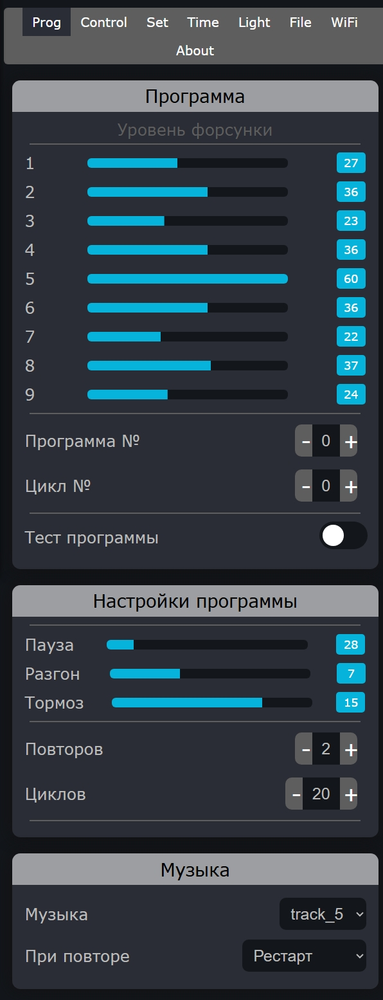
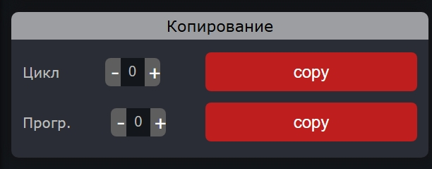
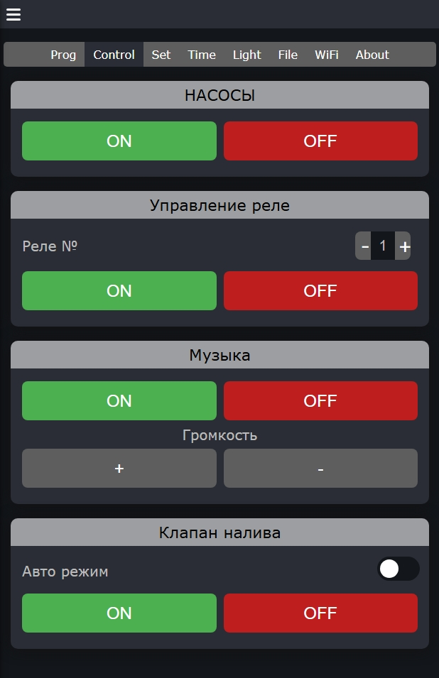
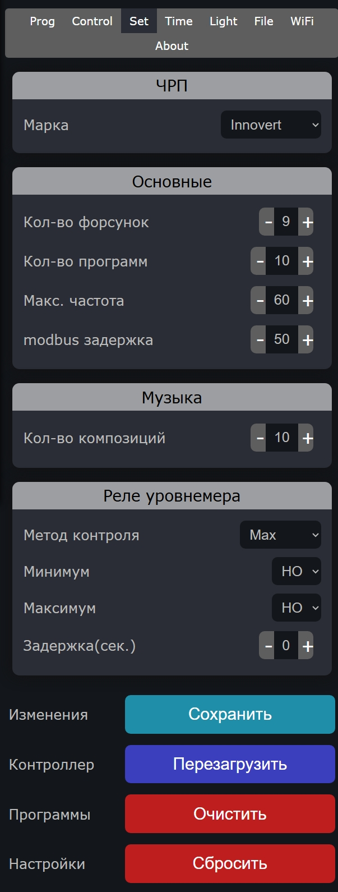
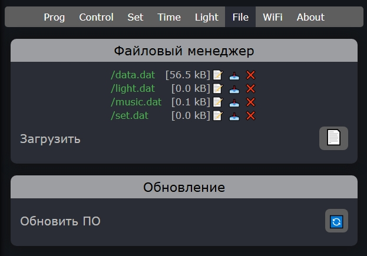
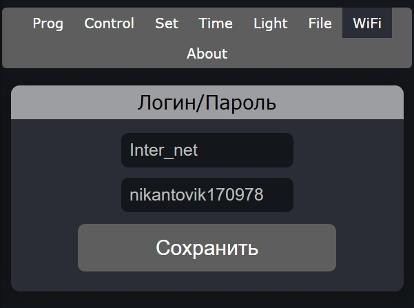
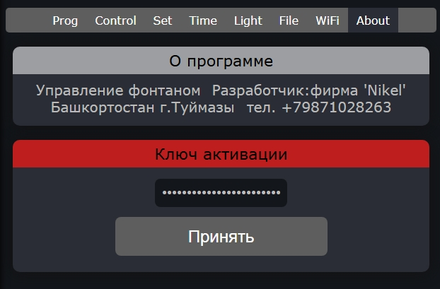

Инструкция программы МОЙ ФОНТАН
Основные возможности
- Управление до 32 форсунками
- 50 программ с 32 циклами
- Точная настройка частот (0-250 Гц)
- Автоматическое расписание
Дополнительные функции
- Управление подсветкой
- Музыкальное сопровождение
- Удаленное управление
- Файловый менеджер
Интерфейс программы

Рис. 2 - Обзор интерфейса программы
Структура интерфейса
| Элемент | Описание | Функции |
|---|---|---|
| Меню | Левая панель навигации | Доступ к разделам программы |
| Панель вкладок | Верхняя горизонтальная панель | Быстрый переход между основными модулями |
| Рабочая область | Центральная часть | Отображение текущего раздела и управление |
Программирование фонтана

Рис. 3 - Страница программирования фонтана
Создание программы
1
Выберите номер программы (от 0 до 49) и укажите количество циклов (от 1 до 32)
2
Настройте параметры каждого цикла:
- Частота для каждой форсунки (0-250 Гц)
- Время выполнения цикла (в десятых долях секунды)
- Параметры разгона и торможения (0-20)
3
Настройте музыкальное сопровождение, выбрав трек из списка или режим "random"
4
Сохраните программу, нажав кнопку "СОХРАНИТЬ ДАННЫЕ"
В режиме отладки (Debug) можно тестировать программу без сохранения изменений.
Копирование программ

Рис. 13 - Интерфейс копирования программ
Как скопировать программу
1
Выберите исходную программу из выпадающего списка "Программа-источник"
2
Укажите целевую программу в поле "Программа-приемник" (от 0 до 49)
3
Выберите параметры копирования:
- Частоты форсунок
- Временные параметры циклов
- Параметры разгона/торможения
- Музыкальное сопровождение
4
Нажмите кнопку "Копировать" для выполнения операции
Дополнительные возможности
| Функция | Описание |
|---|---|
| Массовое копирование | Копирование одной программы в несколько приемников |
| Частичное копирование | Копирование только выбранных параметров |
| Создание шаблонов | Сохранение часто используемых настроек как шаблонов |
При копировании в существующую программу все текущие данные будут перезаписаны!
Управление системой

Рис. 4 - Панель управления системой
Управление насосами
| Элемент управления | Действие | Описание |
|---|---|---|
| Кнопка "ON" | Включение | Запускает все насосы согласно текущей программе |
| Кнопка "OFF" | Выключение | Останавливает все насосы |
| Слайдеры частоты | Регулировка | Позволяет вручную установить частоту для каждой форсунки |
Управление реле
| Элемент управления | Действие | Описание |
|---|---|---|
| Поле "Реле №" | Выбор | Введите номер реле (1-99) для управления |
| Кнопка "ON" | Включение | Активирует выбранное реле |
| Кнопка "OFF" | Выключение | Деактивирует выбранное реле |
Управление клапаном
| Элемент | Тип | Функция |
|---|---|---|
| Переключатель "Авто режим" | Toggle | Включает автоматическое управление по уровнемеру |
| Кнопка "ON" | Button | Ручное открытие клапана |
| Кнопка "OFF" | Button | Ручное закрытие клапана |
Коррекция параметров

Рис. 5 - Страница коррекции параметров
Корректоры частоты
| Параметр | Диапазон | Назначение |
|---|---|---|
| Корректор форсунки | 0-40 Гц | Компенсация разницы в производительности форсунок |
| Время разгона | 0-20 | Плавный старт для увеличения срока службы |
| Время торможения | 0-20 | Плавная остановка насосов |
Настройка корректоров
1
Включите отображение корректоров, активировав переключатель "Корректоры" в главном меню
2
Для каждой форсунки установите значение корректора с помощью соответствующего слайдера
3
Сохраните изменения кнопкой "СОХРАНИТЬ ДАННЫЕ"
Коррекция влияет на все программы. Изменяйте значения осторожно!
Основные настройки

Рис. 6 - Основные настройки системы
Настройки ЧРП
| Параметр | Значения | Описание |
|---|---|---|
| Марка | Innovert, Симулятор | Выбор модели частотного преобразователя |
Основные параметры
| Параметр | Диапазон | По умолчанию |
|---|---|---|
| Кол-во форсунок | 1-32 | 9 |
| Кол-во программ | 1-50 | 10 |
| Макс. частота | 50-250 Гц | 150 Гц |
| Modbus задержка | 0-250 мс | 50 мс |
Настройки уровнемера
| Параметр | Варианты | Описание |
|---|---|---|
| Метод контроля | Max, Min, Max/Min | Способ определения уровня воды |
| Минимум | НО, НЗ | Тип реле минимального уровня |
| Максимум | НО, НЗ | Тип реле максимального уровня |
| Задержка | 0-250 сек | Время задержки срабатывания |
Настройки времени работы

Рис. 7 - Настройки времени работы
Текущее время
| Параметр | Формат | Пример |
|---|---|---|
| Дата | ДД.ММ.ГГГГ | 15.06.2023 |
| Время | ЧЧ:ММ:СС | 14:30:00 |
Расписание работы
| Функция | Время включения | Время выключения | Инверсия |
|---|---|---|---|
| Фонтан | 08:00 | 22:00 | Нет |
| Подсветка | 20:00 | 23:00 | Да |
| Музыка | 09:00 | 21:00 | Нет |
Управление подсветкой

Рис. 8 - Управление модулями подсветки
Настройка модулей
| Параметр | Диапазон | Описание |
|---|---|---|
| Кол-во модулей | 0-10 | Количество MODBUS-модулей |
| Реле в модуле | 1-8 | Количество реле в каждом модуле |
Адреса модулей
| Модуль | Диапазон адресов | По умолчанию |
|---|---|---|
| Модуль-1 | 10-247 | 10 |
| Модуль-2 | 10-247 | 11 |
| Модуль-3 | 10-247 | 12 |
Файловая система

Рис. 9 - Файловый менеджер системы
Основные функции
| Функция | Описание | Доступ |
|---|---|---|
| Просмотр файлов | Навигация по файловой системе | Чтение |
| Загрузка файлов | Добавление новых файлов | Запись |
| Удаление | Удаление существующих файлов | Удаление |
| Обновление ПО | Установка новых версий | Администратор |
Загрузка файлов возможна только через веб-браузер!
Настройка Wi-Fi подключения

Рис. 10 - Настройки Wi-Fi подключения
Подключение к сети
| Параметр | Описание | Пример |
|---|---|---|
| Login (SSID) | Имя Wi-Fi сети | MyWiFiNetwork |
| Password | Пароль от сети | SecurePassword123 |
Точка доступа
| Параметр | Значение |
|---|---|
| SSID | fontan |
| Пароль | Gfgf19081947 |
| IP-адрес | 192.168.4.1 |
О программе

Рис. 12 - Страница информации о программе
Информация о разработчике
| Параметр | Значение |
|---|---|
| Название | Система управления фонтаном Nikel |
| Версия | 2.0 |
| Разработчик | Фирма "Nikel" |
| Страна | Россия |
| Город | Туймазы, Башкортостан |
Лицензионный ключ
Для активации полной версии программы введите лицензионный ключ:
LANI-8ETP-3WLK-XFE1
После ввода ключа нажмите кнопку "Принять" для активации.
Лицензионный ключ привязывается к MAC-адресу устройства. При замене оборудования обратитесь в техническую поддержку.
Контактная информация
| Канал связи | Контактные данные |
|---|---|
| Телефон | +7 (987) 102-82-63 |
| support@nikel-fountain.ru | |
| Адрес | Башкортостан, г. Туймазы |
Решение проблем

Рис. 11 - Раздел решения проблем
Частые проблемы и решения
| Проблема | Возможная причина | Решение |
|---|---|---|
| Нет подключения | Проблемы с питанием или сетью | Проверьте кабель питания и сетевые настройки |
| Не работают форсунки | Неправильные настройки или подключение | Проверьте настройки частот и физическое подключение |
| Ошибки MODBUS | Неправильные адреса или обрыв линии | Проверьте адреса устройств и целостность линии |
| Не работает Wi-Fi | Неправильные учетные данные | Проверьте SSID и пароль, перезагрузите контроллер |
Сброс настроек
1
Перейдите на вкладку "Set"
2
Нажмите кнопку "Сбросить" в разделе "Настройки"
3
Для полного сброса нажмите "Перезагрузить"
Техническая поддержка
Разработчик: фирма 'Nikel'
Адрес: Башкортостан г.Туймазы
Телефон: +79871028263
Email: support@nikel-fountain.ru
Режим работы: Пн-Пт, 9:00-18:00 (МСК)